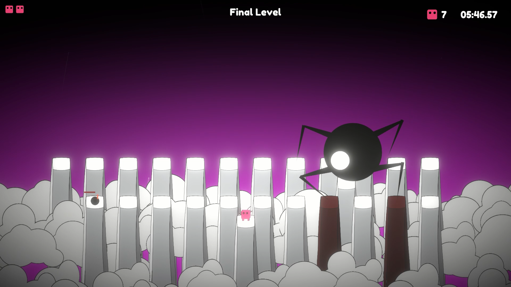
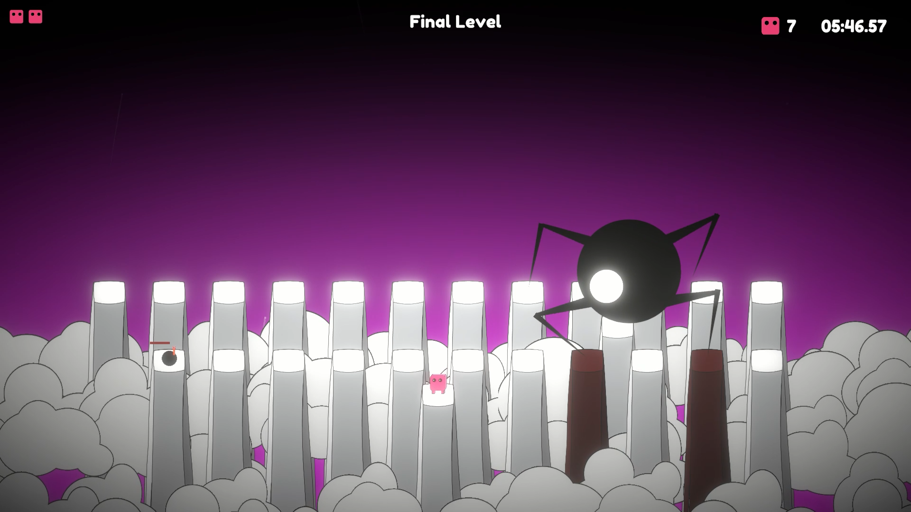
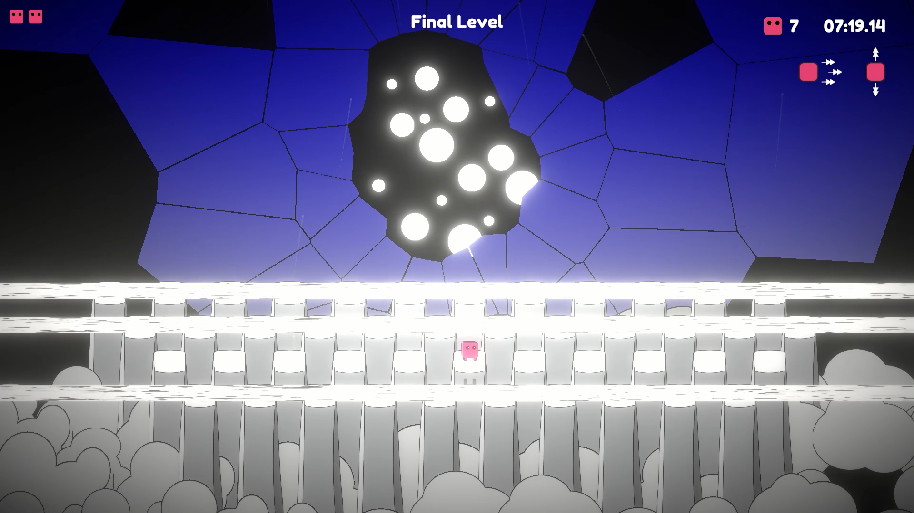
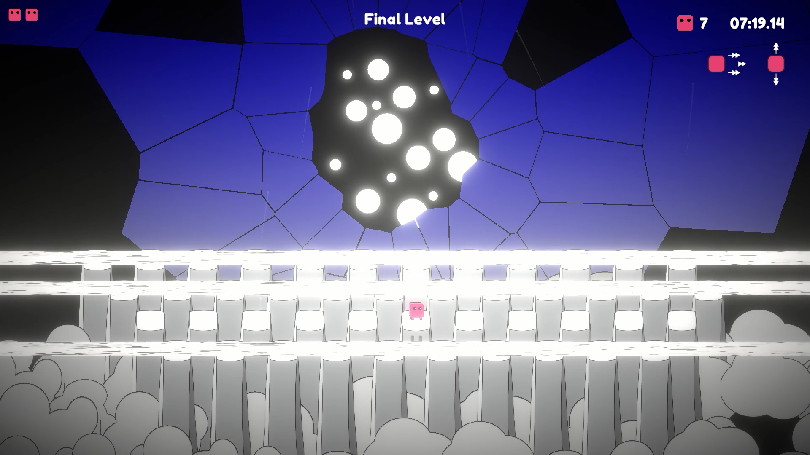

Games
These days I am a game developer working for a mobile games company,
in my spare time, I build games solo and try and find interesting mechanics
that can be fun to play around
You can play them on my itch.io page
Spinning Roles
Spinning Roles is my submission to the 2022 GMTK Game Jam
Built around the theme of Roll Of The Dice
I wanted to build a game that does not use the classical definition of a dice, utilizing mechanics of randomness,
but rather focus on what happens when the dice rolls, resulting in a gravity based 3D puzzle game
Berto
Berto is a Keyboard Rage Game
Berto is a game where you controll a small pink guy, moving him across pillars
that correspond to keyboard keys, crossing difficult keyboard traversing gauntlets and badass boss fights
The idea came from trying to utilize the whole keyboard, making it some sort of playground for your fingers
This is not a typing game
 

 
